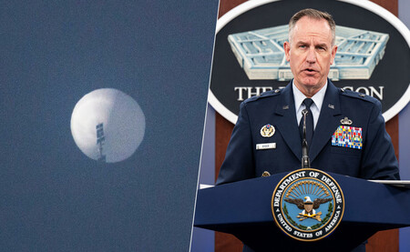

Servicios de telecomunicaciones

Estados Unidos ha detectado en los últimos días lo que parece ser un globo espía chino sobrevolando sus cielos en el Estado de Montana, junto a la frontera canadiense, según han confirmado mandos militares. “Ejemplos de este tipo de actividad de globos se han observado previamente en los últimos años”, indica en un comunicado el portavoz del Pentágono, Pat Ryder. Mientras que a veces se usan para estudiar el cosmos o confeccionar pronósticos meteorológicos, también hay quienes pretenden utilizarlos como un arma de espionaje.
El globo detectado por Estados Unidos “viaja a una altitud muy por encima del tráfico aéreo comercial y no representa una amenaza militar o física para las personas en tierra”. Con esta descripción, podría tratarse de un globo estratosférico. O como lo define la Agencia Espacial Canadiense (ASC, por sus siglas en inglés), un globo de gran altitud que se lanza a la estratosfera. “Son el único tipo de globos que pueden operar en esta región de la atmósfera (de 15 a 45 kilómetros de altitud), que es demasiado baja para los satélites, demasiado alta para los aviones y demasiado rápida para los cohetes”, señala.
Estos globos, según el organismo, suelen ser de plástico ultrafino relleno de helio y pueden estirarse en forma de una gigantesca lágrima invertida con una altura similar a la de la Torre Eiffel. Normalmente, están equipados con góndolas (canastas que penden del globo), que pueden transportar herramientas científicas, astronómicas o de predicción meteorológica, además de cámaras diurnas y térmicas, radares o incluso enjambres de drones.
“Los globos estratosféricos son una plataforma elegida por científicos e ingenieros, ya que pueden usarse para probar y hacer avanzar la ciencia espacial por mucho menos que el coste de un satélite (hasta 40 veces menos) y brindan la oportunidad de llevar a cabo experimentos científicos concretos en un corto período de tiempo y obtener resultados rápidamente”, señala la ACS.
Espiar desde las alturas
Además de que sirven para realizar experimentos científicos en un entorno similar al espacio, estos globos pueden resultar útiles para monitorizar desastres naturales y en misiones de vigilancia. De hecho, un mando militar en el Pentágono ha confirmado, en declaraciones a la prensa y bajo anonimato, que el propósito del globo detectado por Estados Unidos “es claramente el espionaje”.
Si bien en el pasado se han producido incidentes similares, en este caso resulta llamativo el tiempo que el globo ha permanecido en territorio estadounidense, más que en otras situaciones previas, según el mando militar. Como indica la ACS, los globos estratosféricos no requieren motor ni combustible y, en algunos casos, pueden realizar vuelos de larga duración: “De días, semanas e incluso meses”.
Por ejemplo, World View Enterprises, una empresa con sede en Arizona que desarrolla tecnología para agencias gubernamentales y la NASA, consiguió en 2019 que uno de sus globos permaneciese en el aire durante 32 días. “Nuestros globos estratosféricos vuelan cinco veces más cerca de la Tierra que los satélites, proporcionando imágenes mucho más detalladas y posibilidades de recopilación de datos”, comentan sus creadores, que aseguran que esta información puede ser útil en la investigación marítima y gubernamental.
El Gobierno de Estados Unidos ya ha tomado medidas para impedir que el aparato pueda recolectar información sensible, según cuenta Ryder. Mientras tanto, Mao Ning, portavoz del Ministerio de Exteriores chino, ha explicado que está verificando la información de Washington y ha instado a la prudencia. “Hacer conjeturas y elevar el tono antes de establecer los hechos no ayuda a la resolución apropiada del expediente”, ha afirmado.
Precio asequible
En los últimos años, varias potencias han experimentado hasta qué punto este tipo de globos pueden servir para vigilar una zona a un precio asequible. El Comité de Servicios Armados del Senado de Estados Unidos reconoció en 2020 “la creciente importancia de los globos estratosféricos en las misiones de mando, control, comunicaciones, informática, inteligencia, vigilancia y reconocimiento y defensa antimisiles”.
El propio Departamento de Defensa de Estados Unidos invierte en este tipo de aparatos. En los últimos dos años, el Pentágono ha gastado alrededor de 3,8 millones de dólares (3,5 millones de euros) en proyectos de globos y planea gastar 27,1 millones en el año fiscal 2023 “para continuar trabajando en múltiples esfuerzos”, según documentos presupuestarios citados por el portal Politico.
Mientras que algunos de sus programas buscan la forma de detectar e incluso derribar este tipo de globos, otros aspiran a crear los suyos propios para que puedan acechar en el espacio aéreo enemigo sin ser detectados. Así lo indica la revista estadounidense Popular Mechanics, citando el programa clasificado COLD STAR (Covert Long-Dwell Stratospheric Architecture), cuyo objetivo sería crear un globo equipado con sensores de alta fidelidad, sistemas de navegación autónoma e inteligencia artificial.
(c)Todos los derechos reservados. Diseñado por Eduardo Villacampa